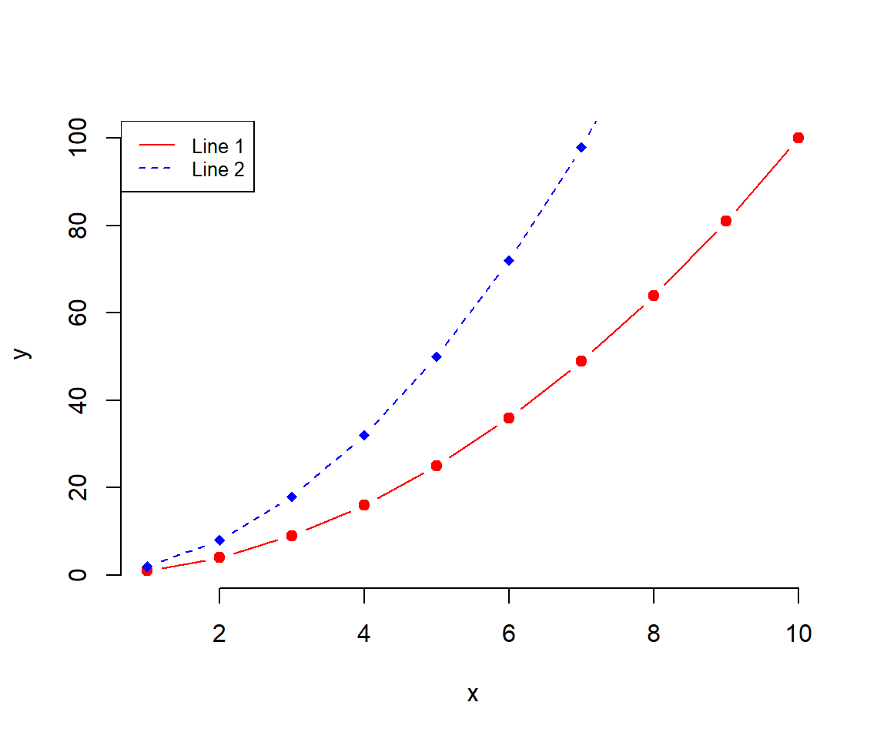

Intro to R
An .R file is a text document. Open (and edit) it with a text editor, a web browser or a more sophisticated software like RStudio.1
Click this link that opens an R script in your browser.
Using .R files or scripts offers efficiency, reproducibility, scalability, collaboration, documentation, and flexibility. They allow you to automate tasks, handle large datasets, collaborate with others, document your work, and customize solutions.
R is a calculator
R is a calculator. Use this R demo in the browser to explore basic features of R. Commands in the script.R tab are executed by the Run bottom. It runs the entire script and prints out results in the R Console. This setting is simplified but reflects the procedure in a more complex integrated developer environment (IDE) like RStudio. Test it.
Definition
Basic arithmetic operators are:
+Addition-Subtraction*Multiplication/Division^Exponent
R is more than a calculator
Your Turn: Adjust the code.
If you never saw R before, change the main title to what ever suits you or change the color option col from lightblue to aliceblue.
If you have some experience, order the bars using the sort() command.
Define objects
Define R objects for later use. Objects are case-sensitive (X is different from x). Objects can take any name, but its best to use something that makes sense to you, and will likely make sense to others who may read your code.
Numeric Variables
The standard assignment operator is <-, the equal sign = works as well. The code assigns the object a the value 2 and b the value 3. The sum is 5.
Logical Variables
Logical values are TRUE and FALSE. Abbreviations work. You can write T instead of TRUE.
> harvard <- TRUE # spacing doesn't matter
> yale <- FALSE
> princeton <- F # short for FALSE
>
> # Attention: FALSE=0, TRUE=1
> harvard + 1
#> [1] 2Although spacing technically doesn't matter in R, there are some best practices to consider.
“Good coding style is like using correct punctuation. You can manage without it, but it sure makes things easier to read.”
Reading
Place spaces around all binary operators (=, +, -, <-, etc.). Do not place a space before a comma, but always place one after a comma.
Read more in Google's R Style Guide at Uni Stanford.
Factor Variables
A factor is an ordered categorical variable. c() is a generic function which combines its arguments.
fruit <- factor(c("banana", "apple") ) # The default ordering is alphabetic
fruit
#> [1] banana apple
#> Levels: apple banana
dose <- factor(c("low", "medium", "high") ) # The default ordering is alphabetic
dose
#> [1] low medium high
#> Levels: high low mediumFactor levels inform about the order of the components, i.e. apple comes before banana and high comes comes before low, than comes medium. Of course, the apple-banana order does not makes any sense, and the high-low-medium order is just wrong. Software cannot know whether an ordering makes sense, that's job of the data scientist. Use the levels option inside the factor() function to tell R the ordering.
Data frame
# think of it conceptually like a spreadsheet
dataDF <- data.frame(numberVec = vectorA,
trueFalseVec = vectorB,
stringsVec = vectorC)
# Examine an entire data frame
dataDF
#> numberVec trueFalseVec stringsVec
#> 1 1 TRUE She is a friend.
#> 2 2 TRUE she is a coworker
#> 3 3 FALSE people# Declare a new column
dataDF$NewCol <- c(10,9,8)
# Examine with new column
dataDF
#> numberVec trueFalseVec stringsVec NewCol
#> 1 1 TRUE She is a friend. 10
#> 2 2 TRUE she is a coworker 9
#> 3 3 FALSE people 8
# Examine a single column
dataDF$numberVec # by name
#> [1] 1 2 3
dataDF[,1] # by index...remember ROWS then COLUMNS
#> [1] 1 2 3
# Examine a single row
dataDF[2,] # by index position
#> numberVec trueFalseVec stringsVec NewCol
#> 2 2 TRUE she is a coworker 9
# Examine a single value
dataDF$numberVec[2] # column name, then position (2)
#> [1] 2
dataDF[1,2] #by index row 1, column 2
#> [1] TRUEPlots
There are base R graphs. There are ggplot2 plots.
# Create some variables
x <- 1:10
y1 <- x*x
y2 <- 2*y1
# Create a first line
plot(x, y1, type = "b", frame = FALSE, pch = 19,
col = "red", xlab = "x", ylab = "y")
# Add a second line
lines(x, y2, pch = 18, col = "blue", type = "b", lty = 2)
# Add a legend to the plot
legend("topleft", legend=c("Line 1", "Line 2"),
col=c("red", "blue"), lty = 1:2, cex=0.8)
Download RStudio https://posit.co/downloads/.↩︎